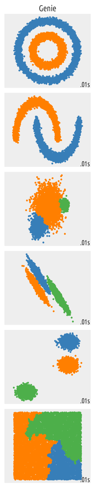

genieclust: Fast and Robust Hierarchical Clustering with Noise Point Detection
Genie finds meaningful clusters quickly – even on large data sets.
{kind=link}
The genieclust package [Gag21] for Python and R implements a robust and outlier resistant clustering algorithm called Genie [GBC16].
The idea behind Genie is beautifully simple. First, make each individual point the sole member of its own cluster. Then, keep merging pairs of the closest clusters, one after another. However, to prevent the formation of clusters of highly imbalanced sizes a point group of the smallest size will sometimes be matched with its nearest neighbours.
Genie’s appealing simplicity goes hand in hand with its usability; it often outperforms other clustering approaches such as K-means, BIRCH, or average, Ward, and complete linkage on various kinds of benchmark dataset. Of course, there is no, nor will there ever be, a single best universal clustering approach for every kind of problem, but Genie is definitely worth a try!
Thanks to its being based on minimal spanning trees of the pairwise distance graphs, Genie is also very fast — determining the whole cluster hierarchy for datasets of millions of points, can be completed within minutes. Therefore, it is capable of solving extreme clustering tasks (large datasets with any number of clusters to detect) on data that fit into memory. Thanks to the use of nmslib [NBMN19], sparse or string inputs are also supported.
Genie also allows clustering with respect to mutual reachability distances
so that it can act as a noise point detector or a robustified version
of HDBSCAN* [CMS13] that is able to detect a predefined
number of clusters and so it doesn’t dependent on the DBSCAN’s somewhat
difficult-to-set eps parameter.
Python Version
The Python version of genieclust is available via PyPI, e.g., via a call to
pip3 install genieclust
from the command line or through your favourite package manager. Note a familiar scikit-learn-like [B+13] look-and-feel:
import genieclust
X = ... # some data
g = genieclust.Genie(n_clusters=2)
labels = g.fit_predict(X)
Note
To learn more about Python, check out Marek’s recent open-access (free!) textbook Minimalist Data Wrangling in Python [Gag22b].
R Version
The R version of genieclust can be downloaded from CRAN by calling:
install.packages("genieclust")
Its interface is compatible with the classic stats::hclust(), but there is more.
X <- ... # some data
h <- gclust(X)
plot(h) # plot cluster dendrogram
cutree(h, k=2)
# or simply: genie(X, k=2)
Package Features
The implemented algorithms include:
Genie++ – a reimplementation of the original Genie algorithm from the R package genie [GBC16]: much faster than the original one; supports approximate disconnected MSTs;
Genie+HDBSCAN* – a robustified (Geniefied) retake on the HDBSCAN* [CMS13] method that detects noise points in data and outputs clusters of predefined sizes;
(Python only, experimental preview) Genie+Ic (GIc) – Cena’s [Cen18] algorithm to minimise the information theoretic criterion discussed in [MNL12].
Other features:
inequality measures: the normalised Gini, Bonferroni, and De Vergottini indices;
external cluster validity measures (see [Gag22a] for discussion): adjusted asymmetric accuracy and partition similarity scores such as normalised accuracy, pair sets index (PSI) [RF16], adjusted/unadjusted Rand, adjusted/unadjusted Fowlkes–Mallows (FM), adjusted/normalised/unadjusted mutual information (MI) indices;
internal cluster validity measures (see [GBC21] for discussion): the Caliński–Harabasz, Silhouette, Ball–Hall, Davies–Bouldin, generalised Dunn indices, etc.;
(Python only) union-find (disjoint sets) data structures (with extensions);
(Python only) some R-like plotting functions.
Contributing
genieclust is distributed under the open source GNU AGPL v3 license and can be downloaded from GitHub. The core functionality is implemented in the form of a header-only C++ library, so it may be adapted to new environments relatively easily — any valuable contributions are welcome (Julia, Matlab, etc.).
Author and Maintainer: Marek Gagolewski
Contributors: Maciej Bartoszuk and Anna Cena (genieclust’s predecessor genie [GBC16] and some internal cluster validity measures CVI [GBC21]); Peter M. Larsen (an implementation of the shortest augmenting path algorithm for the rectangular assignment problem which we use for computing some external cluster validity measures [GBC16, RF16]).
Examples and Tutorials
API Documentation